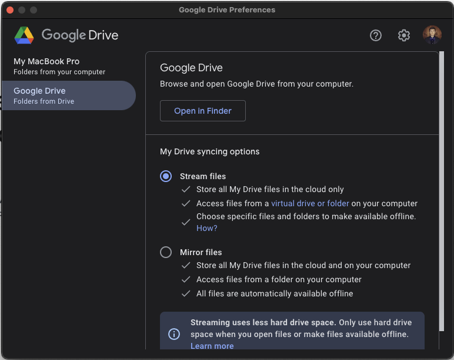

Print Farm Management
Print Farm Setup
There are a few things you need to do to prepare to slice and upload for our print farm.
BambuStudio Setup
- Download version the most recent version of BambuStudio.
- Login to the OpuloInc Bambu account. Check the pinned message in the print-farm channel on Mattermost for the credentials.
- Make sure you're logged in by going to the Home icon and checking that the user in the top left is OpuloInc.
Google Drive
We use Google Drive to manage all our 3MF files.
- Install Google Drive Desktop and login with your Opulo email account.
- Select the "Stream files" option. 
- Navigate to
Shared Drives/OpuloEngineering/Manufacturing/In-House Production/3D Printingin Finder, and click on the little clowd/arrow icon next to it. This will keep this folder downloaded to your computer.
Updating the Print Farm
When we make a new release of any of our products on Github, we'll need to update our print farm so we're making the latest and greatest. Performing this section constitutes a checked box for the Update Print Farm task in Mattermost Playbooks.
Different Products
Keep in mind that this process will happen the exact same for other products. We'll use the LumenPnP as an example, but it's the same process for other products.
Making a new folder
- Go to the latest release (LumenPnP)(Feeders) for the product you're updating.
- Under "Assets," download the zip file with "STLs" or "STEPs" in the name.
- Go to the "Print Farm Files" folder in Drive.
- You'll find a series of folders, one for each version of each product.
- Duplicate the latest folder for the product you're updating. In this example, we're duplicating
LumenPnP v3.2.0 - Rename the duplicate folder name to the version of the release. Also rename all files inside to the new version number. In this example,
LumenPnP v3.2.2. - Delete everything in the
sourcefolder, and in theslicefolder. - Unzip the source file you downloaded from the release.
-
Move all unzipped files into the now empty
sourcefolder.If some files don't export correctly
Some files don't kick out from the CI correctly. If you need to add edited source files, drop them into the
sourcefolder, and DELETE THE OLD VERSION. Thesourcefolder should only ever contain one version of the source, best used for printing.
Updating 3MFs
All the files have been moved and renamed successfully. Now, we need to update the 3MF files to contain all the new changes.
- In the release notes, check for a list of files that have been updated. These are the files that you need to pull from the source in the 3MF files.
-
For each file in this list:
- Find the 3MF file that contains it. The names aim to be as descriptive as possible.
- With the 3MF file open in BambuStudio, look for the plate with the part's name.
If the file is not present
If you cannot find a plate with the title of the part, it is likely a new part. Make a new plate and title it the name of the part.
The new plate MUST have a plate type dedicated to it. Click on the nut icon, and select the plate type. This makes sure the frequently changing global plate type does not affect the job.
If the file is titled in the format
vX.X.X_ORCAThis is our 3MF with weird parts that need to be sliced in Orcaslicer! We use Orcaslicer for a few handy features, namely mouse-ear brims. If you need to open the 3MF with this name, do so in Orcaslicer.
- Delete all the old parts from the plate.
-
Click the "Add new part" button.
-
Select the new version of the part from the "source" folder for the new version.
- Right click on the newly added part and select "Fill bed with copies"
- It does a pretty good job of laying the parts out, but if it does something stupid, feel free to move them around a bit.
Slicing and Saving
With your 3MFs up to date, we'll slice them and send them to all the printers on the farm.
- Open each of the 3MF files in the version folder in turn. Inside each 3MF file, you'll find a plate for each part. For each plate in each 3MF file:
- Click on a plate to select it. It should appear darker than the others.
- Make sure your slicing settings are correct.
- Filament should be
MFG - STANDARD - PolyLite PLAfor all prints. (The small exception is the dynamic board mount which isGeneric PETG, and peel-worm-gear getsMFG - DETAIL - PolyLite PLA). - Process should be
MFG - STANDARD - 0.2mm P1Pfor almost all prints. The few exceptions are that the feeder frame needs to useMFG - FEEDER - 0.2mm P1Pand the worm-gear needs to useMFG - DETAIL - 0.08mm P1P. - Be sure you're slicing with the correct Plate Type. Reference the Print Farm Kanban Cards for the correct plate type for each print.
- Filament should be
- Click "Slice Plate."
- Inspect the resulting toolpath. Any overhangs? Any potential issues?
- Click the "Export plate sliced file" button.

- Save the .gcode file to the
slicefolder.
Sending
We use a utility to upload all sliced files to our print farm. Open FarmUpload on your computer, select the settings.json file in the "Print Farm Files" Drive folder, and select the newly filled slice folder.
Making Small Tweaks
Sometimes we need to make small updates to slicing files, or even little design tweaks between releases. If you need to do one of these, do the following:
- Drag the new source file into the
sourcefolder, making sure to delete the old one. We can always get the original back from the Github release, so don't worry about trying to preserve it. Thesourcefolder should not be ambiguous; one file / version in the folder at a time. - Pop open the 3MF file that contains the file. Delete all the instances on the plate, and import your new stuff.
- Reslice and such, following all the same rules as above.
- When done, click
Export plate sliced fileand save it in TWO PLACES. We do this so it's easy to provision a new sd card, and also easy to just drop in the files that are updated beyond the initial provision (and handy for the FarmUpload tool!): - Directly in the
slicefolder. - Also in the
_piecemealfolder in theslicefolder. - Save the 3MF.
If you need fucky settings
In the super rare occasion where you need weird or custom settings for your part, you should make a new process preset, in the format of MFG - NAME - layerHeight printerType. So, for example, if I really needed slow printing for a few parts, I might save a process called MFG - SLOW - 0.20mm P1P.
Making Kanban Cards
Before switching over the farm, you need to update the Kanban cards.
- Go to the Opulo Kanban Card Document. There is a card type called "Kanban" that you should use when making new cards. Do the following:
- Delete cards for any parts that are not part of the new build.
- Add new cards for any new parts.
- Edit any cards for parts that have changed (material, color, build plate).
- Print any changed or new cards on the Dymo label printer.
- Grab the "Kanban Supplies" box on the rack by the print farm to get the printed cards you can affix the labels to.
Officially Change Over
- Find the print bins for all parts that have changed, and parts that are no longer needed. Throw away all the parts in the bins, and the kanban cards for the parts that have new cards.
- Put all the new cards you made in the last section into new bins to support the new parts.
- Next to the print farm is a board with the current version of each product. Update to the verison you just sliced for.
- Post in #factory-floor about the version change, and that folks should be mindful of the new version when selecting the print to run from the printer.
Running the Print Farm
We run the print farm in a kanban style. When a part gets low, and we hit the "kanban level" of the part, we know it's time to print more.
- Check the kanban board by the print farm. The kanban cards on the board are parts we need to print.
- For each card:
- Find a printer that already has the correct material loaded and build plate loaded. If none are available, swap filament and build plates.
- In the printer's files, find the part name. Make sure you're selecting the correct version. The curent version number is posted in the print farm area.
- Run the print.
- When prints are complete, bring them to the processing area for QC and support clearing.
- Using an empty bin, move them into Ghidra and fill the bin for that part.
- If the parts are now full to the green line, return the kanban card to the parts bin in Ghidra or the Tequila Sunrise. If the parts have not reached the green line, keep the kanban by the print farm to indicate more need to be printed.
While consuming parts in a build, when you notice the part level in a bin goes below the red line, take the kanban card and put it on the board by the print farm.
Using Bambu Farm Manager
To manage all of our printers at once, we use Bambu Farm Manager running on a standalone Windows PC near the print farm. This allows us to instantly send prints to multiple printers, manage files, and more.
- Open the Bambu Farm Manager Client and login.
- This login is not the same as Bambu Studio — please ask Nick for the credentials.

Uploading Files
Files should be uploaded to Google Drive following the guidelines laid out by the Google Drive section. Files will then be uploaded from Google Drive to the Bambu Farm Manager software manually. If there is an update to a file added to Google Drive, the file inside Bambu Farm Manager will not automatically update. The updated file must be re-uploaded into the Bambu Farm Manager.
- Navigate to "Files". Choose the folder that fits the file you are uploaded and click the "Upload" button. Create a new folder if necessary by clicking the + sign to the right of "Folders List".

 2. Click anywhere in the outlined box to open the File Explorer. Find your files (likely in the shared OpuloEngineering Drive) and upload them. You can upload up to 20 files at a time.
2. Click anywhere in the outlined box to open the File Explorer. Find your files (likely in the shared OpuloEngineering Drive) and upload them. You can upload up to 20 files at a time.

Files will now be available to print in the folder they were uploaded to.
Printing
-
Navigate to the "Printers" page. Use this page to monitor the status of all printers connected to the Farm Manager.

-
Navigate to "Files" in the menu bar on the left.

-
This page is where the print files live. Select the file you'd like to print, click the "Create" button on the far right to create a print job. From the drop-down menu, select Direct-Print Task.

These files do not automatically update from Google Drive
If there is a new version of the file you'd like to print, you need to upload the new version in "Files". Please follow along with the Uploading Files section for clear instructions on how to upload files to the Print Farm Manager software.
-
Select the printer you would like to use, make sure Timelapse is set to "Off" and Auto Bed Leveling is set to "On". Then click "Start Direct Print".

The job will start and can be monitored in the "Printers" page of the program.
Performing Maintenance
Maintenance Guides
- Extruder Unit Replacement Guide
- Complete Hotend Assembly Replacement Guide
- Filament cutter lever Replacement Guide
Logging Maintenance
Any time a printer is being repaired, log the work completed to the appropriate Printer Service Records Google Sheet by scanning the QR code found on each printer.
Provisioning New Printers
Beging provisiong any new printer by running them through the following guides:
Setup Maintenance Tracking Spreadsheet per Printer
- Naviagate to Google Shared drives/OpuloEngineering/Manufacturing/In-House Production/3D Printing/Print Farm Service Log Sheets and make a copy of
# - Printer Template - Bambu Lab P1P Service Log Sheet - Edit the copied template's file name by replaceing
Copy of # - Printer Template -with the next available printer number.- For example:
70 - Printer Seventy - Bambu Lab P1P Service Log Sheet - Note that these numbers are one time use only - if a printer has been scrapped, do not reuse it's number!
- For example:
-
Open the newly created maintenance tracking sheet and fill out the following fields:
- Label:
- Serial Number:
- Date of Purchase:
- Date put into service:
-
Copy the URL of the given tracking sheet before coninuing on to the next section
Labeling Printers
First, label each printer with a QR Code linking to it's associated maintenance tracking spreadsheet
- Open Scanable Printer Service Records Labels.label with Dymo Label
-
Double-click the QR code to open the
Barcode Objects Propertieswindow before pasting the previously copied URL into theWeb Pagetext field -
Click
OKto close out of theBarcode Objects Propertieswindow - Edit the text field right of the previously updated QR code to denote the correct Printer Number
-
Repeat these steps until the template is populated with data for up to three printers
-
Print the page out on a 4"x6" shipping label and cut the page apart into however many QR code stickers you made
-
Adhere the label(s) to the printer(s) you are provisioning
Next, label the printer's power cable with it's assigned number
- Open Printer Power Cord Labels.label with Dymo Label
- Edit the template to match the printer's assigned number
-
Print two copies on 1 1/4" x 2 1/4" labels
-
Adhere a label to each end of the printer's power cord
Update sites.XML for FileZilla Upload Support
- Add the new printers to the FileZilla XML file